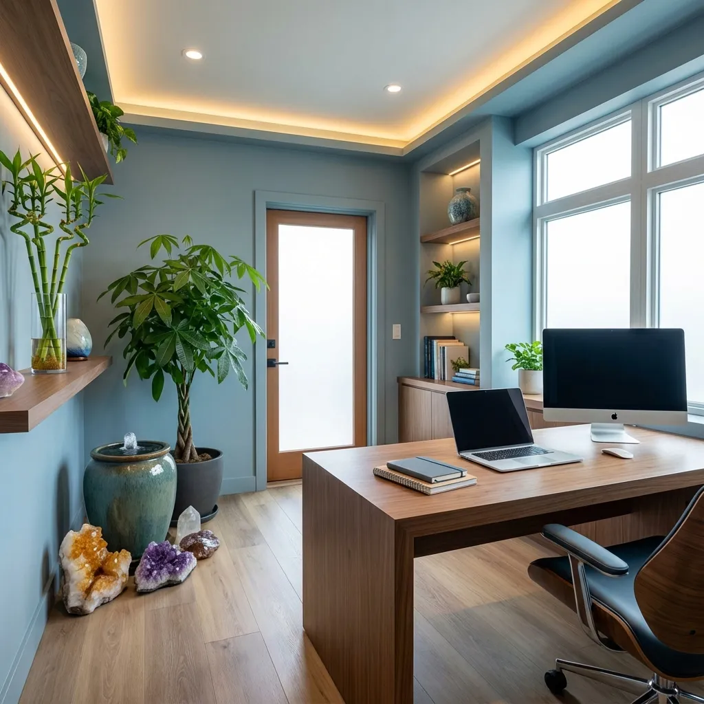

Why Office Feng Shui Matters
You spend 8+ hours a day in your office. The energy (Chi) of your workspace directly impacts your:
- 💼 Career advancement and opportunities
- 💰 Income and financial success
- 🧠 Focus and productivity
- 😊 Mood and stress levels
- 🤝 Professional relationships
Whether you work from home or in a corporate office, applying feng shui principles can transform your work experience.
📖 Table of Contents
Desk Placement: The Command Position
The Command Position is the #1 rule of office feng shui. Your desk should be positioned so you can:
- ✅ See the door without being directly in line with it
- ✅ Have a solid wall behind you (support)
- ✅ Have space in front of you (opportunities)
- ✅ Avoid sitting with your back to the door
Ideal Desk Positions
Best: Diagonal from the door, facing into the room
- Solid wall behind you
- Clear view of the entrance
- Maximum sense of control and security
Good: Against a wall, facing the door
- Can see who enters
- Solid support behind
- Feels protected
Avoid: Back to the door
- ❌ Creates anxiety and vulnerability
- ❌ Limits career advancement
- ❌ Reduces productivity
Can't Move Your Desk?
If you're stuck with a bad desk position:
- Place a mirror to see the door behind you
- Add a tall plant or screen for symbolic support
- Use a high-backed chair for protection
Desk Organization & Bagua Map
Your desk is a mini Bagua map. Each area corresponds to different life aspects:
Desk Bagua Zones (Facing Your Desk)
- Far Left (Wealth Corner) - Place a plant, purple object, or water feature
- Far Center (Fame/Recognition) - Awards, certificates, red accents
- Far Right (Relationships) - Photos, pairs of objects, pink items
- Middle Left (Family/Health) - Family photos, green items
- Center - Keep clear for work, yellow/earth tones
- Middle Right (Creativity) - White/metal items, inspiring objects
- Near Left (Knowledge) - Books, blue items
- Near Center (Career) - Business cards, black/water elements
- Near Right (Helpful People) - Contact list, gray/metal items
Desk Organization Tips
- ✅ Keep the center clear for active projects
- ✅ File or discard papers daily
- ✅ Use drawer organizers
- ✅ Hide cables and cords
- ✅ Clean your desk weekly
- ❌ Avoid clutter - it blocks opportunities
- ❌ Don't stack papers high - creates stress
Office Colors for Success
Best Colors by Career Goal
For Career Advancement: Blue & Black
Water element colors promote:
- Career flow and progress
- Communication skills
- Wisdom and depth
Use: Navy blue desk accessories, black picture frames
For Creativity: White & Gray
Metal element colors enhance:
- Innovation and new ideas
- Precision and clarity
- Organization
Use: White desk, gray filing cabinets, metal organizers
For Wealth: Purple & Green
Wood element colors attract:
- Financial growth
- Abundance and prosperity
- New opportunities
Use: Purple desk mat, green plants, wooden furniture
For Recognition: Red & Orange
Fire element colors boost:
- Visibility and fame
- Passion and energy
- Leadership presence
Use: Red accent pieces, orange artwork (use sparingly)
For Stability: Yellow & Earth Tones
Earth element colors provide:
- Grounding and stability
- Reliability and trust
- Nourishment and support
Use: Beige walls, yellow accents, terracotta pots
Color Combinations
- Executive/Leadership: Navy blue + gold accents
- Creative Professional: White + pops of color
- Sales/Marketing: Red + green (balance energy and growth)
- Finance/Accounting: Green + brown (wealth and stability)
Best Plants for Office Feng Shui
Top 5 Office Plants
1. Lucky Bamboo (富贵竹)
- Benefits: Career growth, good fortune
- Placement: Wealth corner (far left) or career area (front center)
- Care: Low maintenance, water only
- Stalks: 3 for happiness, 5 for wealth, 8 for prosperity
2. Money Tree (发财树)
- Benefits: Financial success, abundance
- Placement: Wealth corner or near entrance
- Care: Moderate water, bright indirect light
3. Snake Plant (虎尾兰)
- Benefits: Air purification, protective energy
- Placement: Any corner, near electronics
- Care: Very low maintenance, drought-tolerant
🌿 Recommended Product: Snake Plant - Perfect for purifying office air and absorbing EMF from electronics
View on Amazon →4. Peace Lily (和平百合)
- Benefits: Harmony, air purification
- Placement: Relationship area (far right)
- Care: Moderate water, low light OK
5. Jade Plant (玉树)
- Benefits: Wealth accumulation, longevity
- Placement: Entrance or wealth corner
- Care: Low water, bright light
🌿 Recommended Product: Jade Plant Succulent - Known as the "money plant" for attracting wealth and prosperity
View on Amazon →Plant Placement Rules
- ✅ Place plants in corners to soften sharp angles
- ✅ Use round-leafed plants (avoid spiky cacti)
- ✅ Keep plants healthy - remove dead leaves immediately
- ❌ Don't place plants directly on your desk (blocks work energy)
- ❌ Avoid dried or fake plants (no life energy)
Lighting & Air Quality
Lighting Tips
- Natural Light: Best for productivity and mood
- Task Lighting: Adjustable desk lamp for focused work
- Ambient Lighting: Soft overhead or floor lamps
- Avoid: Harsh fluorescent lights, sitting in shadows
Air Quality
- Open windows daily for fresh air circulation
- Use air-purifying plants
- Consider an air purifier
- Avoid stale, stuffy environments
Common Office Feng Shui Mistakes
1. Clutter and Disorganization
Problem: Blocks energy flow and opportunities
Solution: Declutter weekly, use organizers, file systems
2. Back to the Door
Problem: Creates vulnerability and anxiety
Solution: Reposition desk or use a mirror
3. Overhead Beams or Shelves
Problem: Creates oppressive energy
Solution: Move desk, hang crystals, or add uplighting
4. Sharp Corners Pointing at You
Problem: "Poison arrows" create negative energy
Solution: Soften with plants, round furniture, or reposition
5. Broken or Non-Functional Items
Problem: Represents stagnation
Solution: Repair or discard immediately
6. Too Many Electronics
Problem: Electromagnetic fields disrupt energy
Solution: Unplug when not in use, add plants, use salt lamps
Conclusion: Creating Your Ideal Workspace
Implementing office feng shui doesn't require a complete renovation. Start with these 3 quick wins:
- Position your desk in the command position
- Declutter your workspace completely
- Add one plant to your wealth corner
These simple changes can immediately improve your focus, productivity, and career prospects.
Your Office Feng Shui Checklist
- ✅ Desk in command position
- ✅ Solid wall behind you
- ✅ Clear desk surface
- ✅ Organized drawers
- ✅ At least one healthy plant
- ✅ Good lighting (natural + task)
- ✅ Appropriate colors for your goals
- ✅ No clutter or broken items
- ✅ Fresh air circulation
📚 Related Feng Shui Guides
- 15 Best Feng Shui Plants - Perfect plants for your desk
- Living Room Feng Shui Guide - Create harmony at home
- 2026 Fire Horse Forecast - Plan your career year
- 2026 Planning Guide - Complete yearly feng shui guide (37 pages)
❓ Frequently Asked Questions
The Command Position is key: face the door without sitting directly in line with it, with a solid wall behind you. For 2026 (Fire Horse year), South and Southeast are especially auspicious directions. Avoid facing North (Water kills Fire) or having your back to the door.
Money Tree (Pachira aquatica) is the top choice for wealth and career success. Other excellent options include Lucky Bamboo, Jade Plant, and Pothos. Place plants in the far left corner of your desk (wealth corner). Avoid cacti or spiky plants on your desk. See our complete plant guide for more options.
Yes, sitting with your back to a window creates instability and lack of support in your career. You need a solid wall behind you for "backing." If you can't move your desk, use a tall-backed chair, add a plant behind you, or hang a heavy curtain on the window.
Blue promotes focus and communication. Green encourages growth and creativity. Purple attracts wealth and recognition. White keeps the space clear and organized. Avoid too much red (overstimulating) or black (too heavy). Add your goal colors as accents - gold/purple for wealth, blue for career.
Mirrors can be helpful if you can't see the door from your desk - place a small mirror on your desk to see behind you. However, avoid mirrors facing your workspace (causes distraction) or reflecting clutter. Never place a mirror directly behind your computer screen. Read our Mirror Feng Shui Guide for more tips.
🎁 Want a Printable Office Feng Shui Checklist?
Download my FREE Feng Shui Guide with room-by-room checklists and optimization tips!
Get Your Free Guide